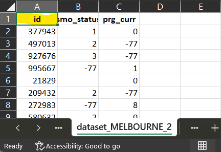
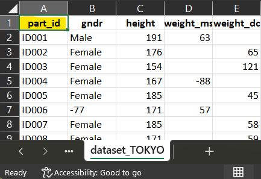
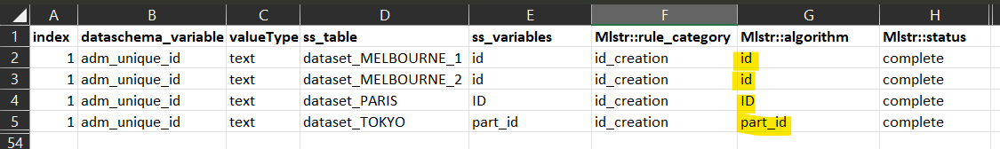
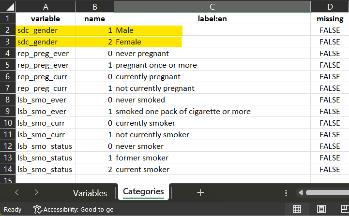
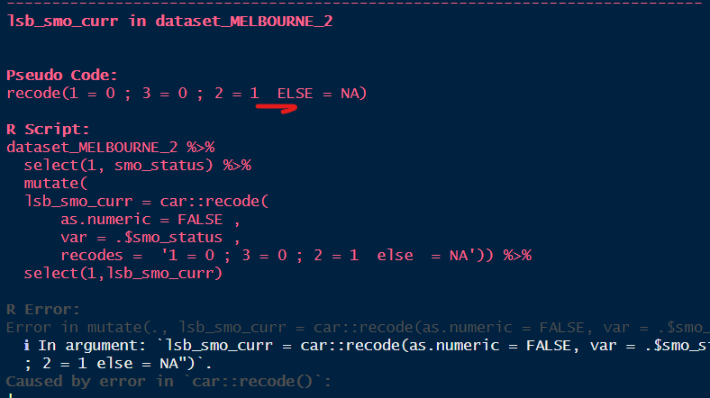

vignettes/c-The-Data-processing-elements.Rmd
c-The-Data-processing-elements.RmdThe Data Processing Element (DPE) is a table that gathers all the harmonization rules used to create each variable defined in the dataSchema. This table is typically an Excel spreadsheet where each row indicates how the study-specific variables are processed to generate a harmonized variable. Once this table is filled, it is used in the harmo_process() function along with the other two parameters (data_schema and dossier) to create the harmonized_dossier. If harmonization cannot be performed correctly due to errors in the DPE, the harmonized_dossier generated can be sent to the show_harmo_error() function, allowing the user to correct the DPE and restart the process.
dataschema_variable, ss_table and ss_variables
The DPE is an typically an Excel file that you open locally in your computer and that you can fill one row after the other to generate the rules of harmonization. It contains at least 5 mandatory columns, plus one additional for your documentation. The process cannot work if one of these columns are not present.
For each dataSchema variable and each study specific dataset, the user must provide which variable(s) will be transformed to generate the harmonized variable.
The name of each study specific dataset must be exactly the same (case sensitive) in the study specific dataset dossier (the dossier provided as input in the function harmo_process()).
The name(s) of the variable(s) must be exactly the same (case sensitive) in the dataset where the variable name is taken from. Plus, the variable(s) must exist in the dataset to be used in the process.
If no variable is needed to generate the harmonized variable (for example using the rule category paste or other), the user must provide _BLANK_ as a placeholder. This ensure that the line is completed and there is no missing argument in the function to perform.
If more than one variable is used to generate the harmonized variable, they must me separated by semi colon ;
The first rule category for each study-specific dataset must be d_creation
Useful tip : You can add an index for each of your harmonised variables and work either per dataset or per harmonized variables using filter/order in Excel.
These columns are the core center of the harmonization process. The user has access to 5 rules of harmonization to transform, process or combine study-specific variables to generate harmonized variables. In addition, they have the ability to generate their own rule using the function ‘other’. If in a dataset, no variable corresponds to the definition of the harmonized variable, the user can put ‘impossible’ to generate NAs and if the user needs more information decide how to harmonize a variable, they can use the placeholder ‘undermined’.
This rule allows the process to initiate. This is a very important step, because the user provides the column which will be used as a reference per observation (row)
This step is mandatory and must be the first rule for each dataset.
Usually, the harmonized variable is a standardized identifier generated from the study-specific identifier.
If the dataset does not have any identifier column, the user can create before harmonization an index and provide this index as the variable to use.
The harmonized variable is generated by replicating one study-specific variable.
The harmonized variable is generated by recoding values from one study-specific variable.
One and only one variable can be recoded at a time.
The variable to be recoded must be (partially at the very least) a categorical variable. To recode a continuous variable (to create brackets for example.), use case_when instead.
If all categories are recoded to the same categories (recode(1 = 1 ; 2 = 2)), Prefer direct_mapping instead.
Separate each value/code with an equal sign =
Separate each elements with a semi-colon ; .
Use ELSE = NA to attribute NA to all of the other values.
If an equal sign already exists in the data, use _= to escape them. Equally, if a semi-colon already exists in the data, use _; to escape them.
recode(
"banana ; apple" = "fruits" _;
"salad ; potatoe" = "veggies" _;
"bread ; pasta" = "carbs" )
recode(
"1000 (='high') _= 3 ;
" 500 (='mid') _= 2 ;
" 200 (='low') _= 1 )
The values can be gathered using R synthax to recode multiple numerical values.
recode(
0 = "low" ;
c(1:10) = "mid" ;
c(-7, -99) = NA )
If the recoding requires more complex codification, use case_when or other instead.
The harmonized variable is generated from one or more if-else conditions, using one or more study-specific variables.
The harmonized variable is generated by recoding values from one study-specific variable.
Multiple variables can be used to combine their values using case_when. Separate each of them in ss_variables by a semi-colon ;
If only one variable is used, and is (or seems) a categorical variable, use recode or direct_mapping instead.
Each statement (“if … equals, greater, is not, …”) can be use in this function. Separate the statement/code with a tilde ~
Separate each elements with a semi-colon ; .
Use ELSE ~ NA to attribute NA to all of the other values.
case_when is sentitive to the data type. Each code generated with the statement must have the same data type, including the NA.
case_when(
var_x == 1 ~ 1
var_x != 0 & !is.na(var_y) ~ 0
ELSE ~ NA_real_ )
case_when(
var_x == 1 ~ 1L
var_x != 0 & !is.na(var_y) ~ 0L
ELSE ~ NA_integer_ )
case_when(
var_x == 1 ~ "1"
var_x != 0 & !is.na(var_y) ~ "0"
ELSE ~ NA_character_)
case_when(
var_x == 1 ~ TRUE
var_x != 0 & !is.na(var_y) ~ FALSE
ELSE ~ NA )
If the statement requires more complex codification, use other instead.
The harmonized variable is generated by setting the same value for all observation, not taken from a study-specific variable.
This function does not require any variable. The user must provide _BLANK_ as a placeholder.
Usually, the harmonized variable is a standardized identifier for the whole study when comes the time to aggregate the harmonized datasets into a pooled harmonized dataset.
The harmonized variable is generated by applying an operation to one or more study-specific variables.
Multiple variables can be used to combine their values using case_when. Separate each of them in ss_variables by a semi-colon ;
If the operation (or seems) is simple, prefer case_when, recode or direct_mapping instead.
The user must have the libraries present on their machine (and loaded) to function with the call of them in the script. To specify the library calling, use double two-point :: in the formula.
lubridate::year(var_x)The harmonized variable is generated from a non-standard or complex processing rule, not covered by other rule categories.
If assignment is needed to modify environment of the user, use double assignation <<- to place the result in the user environment. Carefully make sure you control your environment when using the other function.
my_harmo_var <- runif(20) + ... # complex lines of code
# double assignation to modify the environment.
harmonized_dossier$DATASET$variable_F <<- my_harmo_varother function can be used to source a code from a different script where complex harmonization processes are written.
source("my_file.R")These additional features allow the user to handle specific cases. This ensure that the line is completed and there is no missing argument in the function to perform.
*__BLANK__* : If no variable is needed to generate the harmonized variable (for example using the rule category paste or other)
impossible : If the study does not collect DataSchema variable or cannot be used to generate DataSchema variable or is unknown.
undetermined : If the user needs further investigation to harmonize, or future information to be completed, they can use this feature without being blocked in the process.
The harmonization status is a column for documentation which refers to the status of harmonization. It gives additional information about the completeness of the generated variable. Another column Mlstr_harmo::status_details gives further information.
- Status detail ‘partial’ should be only employed for prospective harmonization purposes. Prefer Mlstr_harmo::status ‘complete’ / Mlstr_harmo::status_details ‘compatible’ instead.
For each variable to harmonize:
1 Open the dataSchema to understand the variable to generate.
The definition of the variable is in the
dataSchema. The name and the valueType of the variable will
be reported in the data processing elements.
2 Collect in each dataset the column corresponding to the participant identifier.
id in dataset_MELBOURNE_1
id in dataset_MELBOURNE_2

ID in dataset_PARIS
part_id in dataset_TOKYO

3 Open the data processing elements and fill for each dataset the information accordingly

The names in ‘ss_table’ must be the same in the dossier and in the data processing elements
1 Open the dataSchema to understand the variable to generate.

The definition of the variable is in the
dataSchema. The name and the valueType of the variable will be
reported in the data processing elements. When categorical, Each study
specific variable (when possible) will be recoded to match the
dataSchema variables categories, using rules of harmonization.
For each dataset, use the data dictionary to comprehend codification and start elaborating the script of harmonization.
2 Identidy for each dataset which column (variable) will be associated to the harmonization script to generate the harmonzed variable.
For dataset_MELBOURNE_1, the corresponding variable ‘Gender’
share the same codification with the dataSchema variable. The script is
a direct_mapping.
Start filling the data processing element for each of the studies, one dataSchema variable after the other.
For dataset_MELBOURNE_2, There is no corresponding variable
collected. The harmonization is impossible.
For dataset_PARIS, the corresponding variable ‘SEX’ has a
codification which is compatible with the dataSchema variable
codification. The script is a recode, where each ‘0’
will be recoded into ‘1’ and each ‘1’ into ‘2’.
For dataset_TOKYO, the corresponding variable ‘gndr’, the
script is also a recode, where each ‘Male’ will be
recoded into ‘1’ and each ‘Female’ into ‘2’.
3 Fill the data processing elements.
Process similarily for each dataSchema variable. When further investigation or future information to be completed, put undetermined as a placeholder.
Save your work, close file and upload it in your R environment if necessary.
Warning ⚠ In your environnement, additional objects must exist: * The dossier containing your study specific dataset(s) * The dataSchema. If not, a minimum DataSchema will be created from elements found in the Data Processing Elements.
dataset_MELBOURNE_1 <- DEMO_files_harmo$dataset_MELBOURNE_1
dataset_MELBOURNE_2 <- DEMO_files_harmo$dataset_MELBOURNE_2
dataset_PARIS <- DEMO_files_harmo$dataset_PARIS
dataset_TOKYO <- DEMO_files_harmo$dataset_TOKYO
# create the dossier
dossier <- dossier_create(list(
dataset_MELBOURNE_1, dataset_MELBOURNE_2, dataset_PARIS, dataset_TOKYO))
dataschema <- DEMO_files_harmo$`dataschema - final`
data_proc_elem <- DEMO_files_harmo$`data_processing_elements - final`
# perform harmonization
harmo_process(dossier,dataschema,data_proc_elem)
If the process of harmonization produces errors in R, the process will not generate the harmonized datasets affected, to avoid version conflicts. The error will be stored in a the column ‘Mlstr_harmo::status’ in its study specific dataschema. The error can be read directly in the console using the function show_harmo_error()
data_proc_elem <-
DEMO_files_harmo$`data_processing_elements - with error`
# perform harmonization
harmonized_dossier <- harmo_process(dossier, dataschema, data_proc_elem)
# use the function to help correcting elements of the harmonization;
show_harmo_error(harmonized_dossier)

Example : in the data processing
element, a semi-colon is missing in the script. The error generated can
be visually assessed in the console so the user can make
corrections.
Warning ⚠ Sometimes, the harmonization produces warnings which are to consider and analyse very closely, because they may refer to errors. A common warning generated is when a decimal is converted into an integer. R does not analyses it as an error, but the information is wrongly harmonized in that case. You should always use harmonized_dossier_evaluate(), harmonized_dossier_summary() and harmonized_dossier_visualize() to help in the the assessment of harmonization.